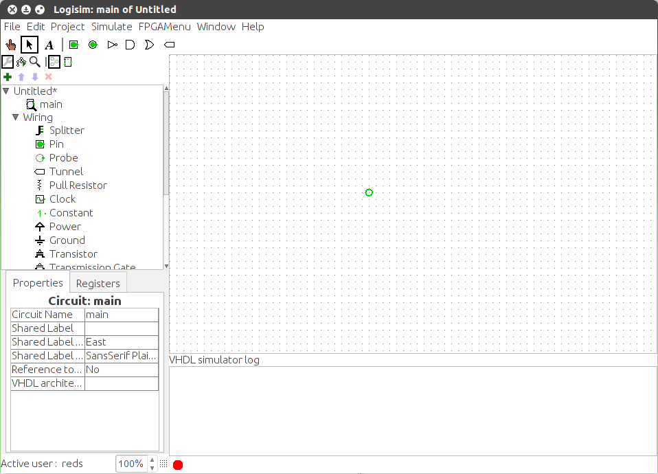

סימולטור VHDL
Logisim לא יכול לבצע הדמיית תוכן VHDL ישירות. במקום זאת, QuestaSim משמש כמשימת רקע.
הפעל סימולטור
אתה יכול להפעיל את הסימולטור דרך סימולציה > VHDL תפריט סימולציה מופעלת. כאשר אתה עושה זאת, קונסולת הסימולטור יומן מופיע בחלק התחתון של חלונית הציור. בסרגל התחתון של ביומן הסימולטור, יש לך את מחוון מצב הסימולטור. ה מדינות הן:

 מושבת (קונסולה נעלמת)
מושבת (קונסולה נעלמת)
 מופעל (אך לא פעיל)
מופעל (אך לא פעיל)
 מתחיל
מתחיל
 פָּעִיל
פָּעִיל
הסימולטור מופעל אוטומטית כאשר הוא מופעל והמעגל מכיל רכיבי VHDL. לא ניתן להפעיל את הסימולטור כאשר אין רכיבי VHDL במעגל.
הפעל מחדש
הדמיית VHDL מופעלת מחדש כאשר אתה מאפס את ה-Logisim סימולציה. זה נוגע רק למצב הסימולציה, זה לא טען מחדש את הסימולציה (וקובצי המקור).
אם שינית את התוכן של רכיב VHDL כלשהו, עליך לעשות זאת הפעל מחדש את סימולטור VHDL. זה אף פעם לא נעשה אוטומטית. אתה יכול הפעל מחדש את הסימולטור דרך תפריט הדמיה.
זמן
יש לקחת בחשבון את זמן הצעד של סימולציית QuestaSim בלתי צפוי, מכיוון שזה תלוי במספר רכיבי VHDL ב- מעגל חשמלי. הצעד המינימלי המוחלט הוא 100ns. לכן, שימוש ב יש להימנע מאירועי סימולציה מבוססי זמן (כמו wait for 10ns). אתה חייב רק אירועים מבוססי אותות.
מספר מופעים
למעשה, אתה יכול לקבל רק מופע בודד של סימולטור VHDL. זה אומר שאתה צריך להשבית אותו בפרויקט הראשון אם אתה רוצה להפעיל את זה בשני. אם תנסה להפעיל את זה שני פרויקטים זה ייכשל ויראה לך הודעת שגיאה.
הבא: בדיקת סימולציה ספסלים.